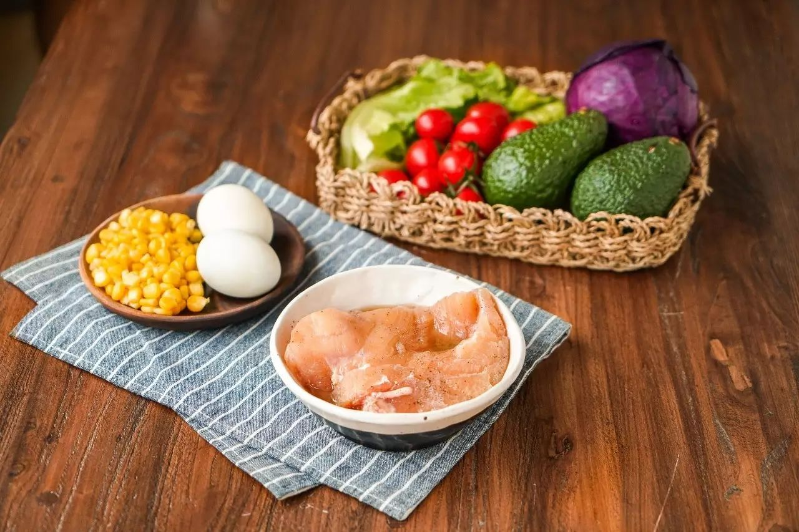
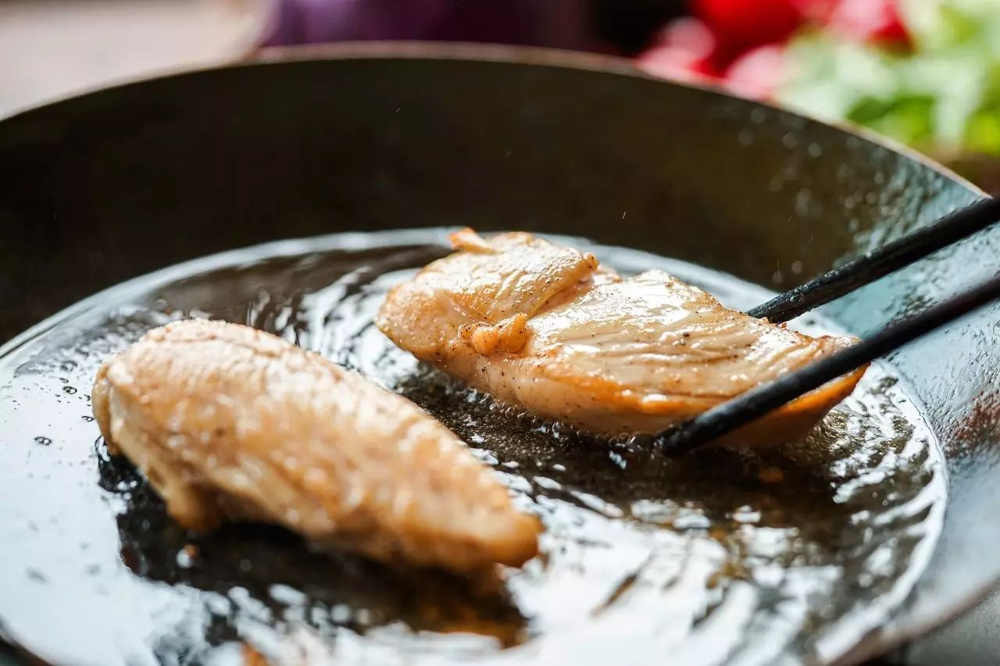
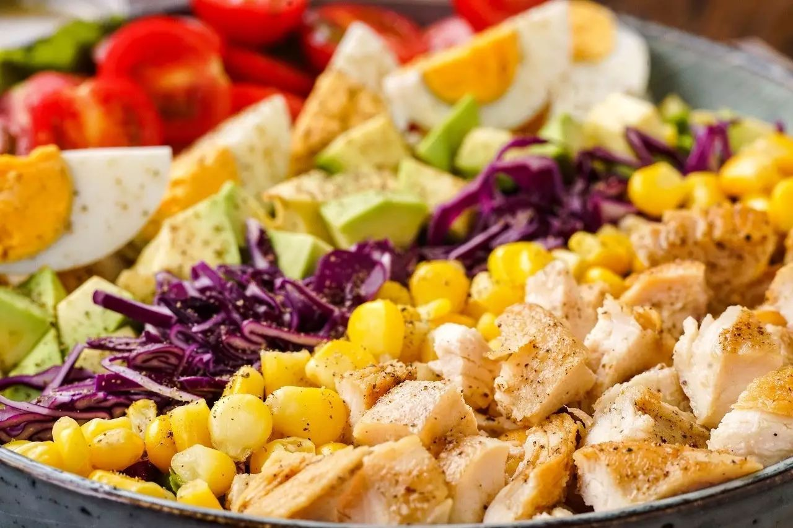
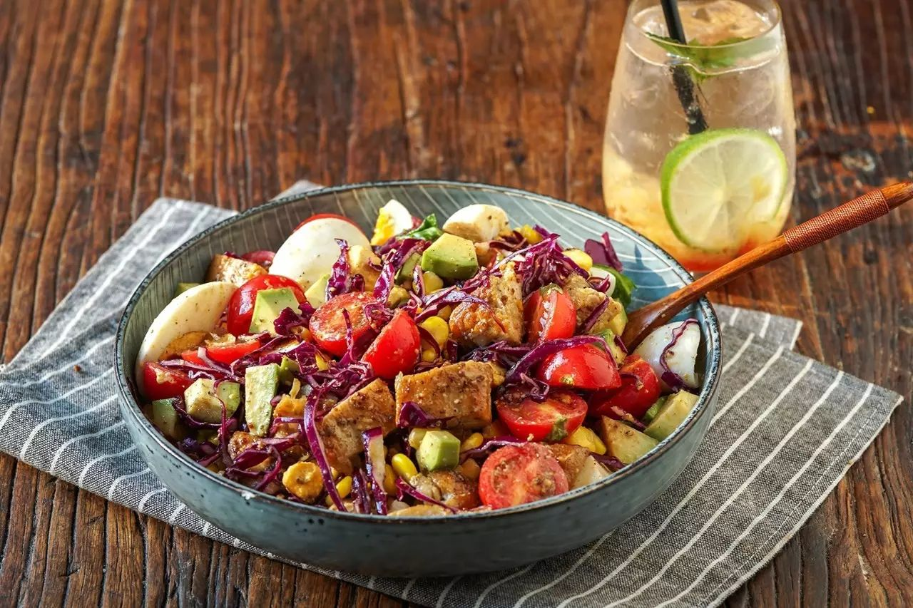
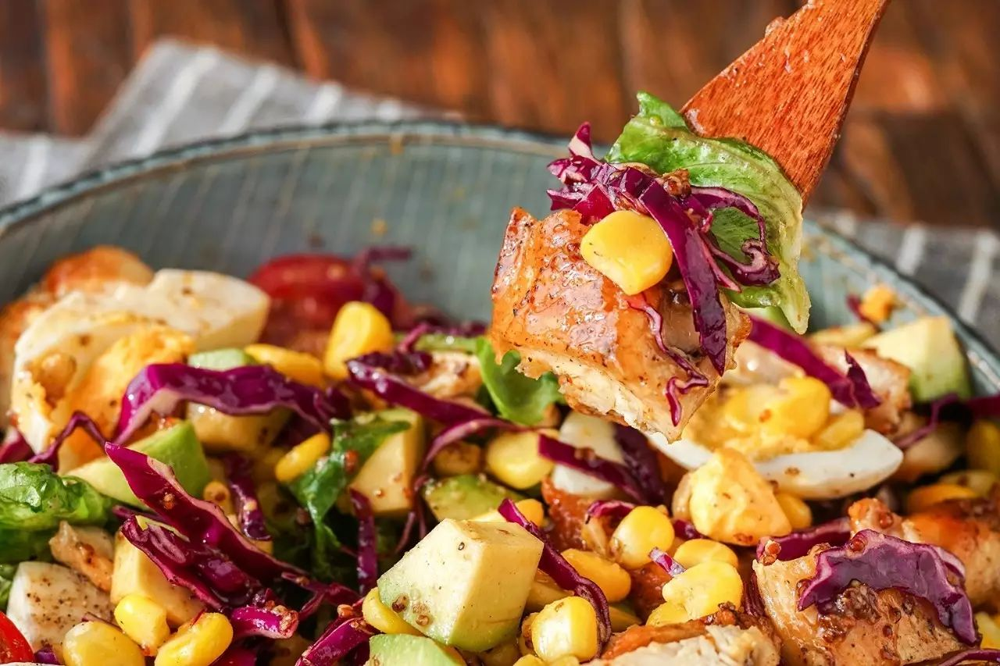

Chicken breast / egg / cherry tomatoes / avocado / purple cabbage / corn kernels / lettuce extra virgin olive oil / apple cider vinegar / honey / yellow mustard seed sauce / black pepper
1. Prepare the vinaigrette: In a bowl, combine extra virgin olive oil, apple cider vinegar, honey, Dijon mustard, salt, and black pepper. Whisk everything together until well blended. Set aside.
2. Cook the chicken: Season the chicken breast with salt, black pepper, and olive oil. Let it marinate for 15 minutes, then pan-fry on both sides until fully cooked.
3. Prepare the ingredients: Cut the cooked chicken breast, avocado, and cherry tomatoes into bite-sized pieces. Shred the red cabbage, blanch the corn kernels, and boil the eggs. Once the eggs are cooled, cut them into quarters. Arrange everything neatly on a bed of lettuce in a serving plate.
4. Finish and serve: Sprinkle with black pepper, drizzle the vinaigrette over the salad, toss well, and enjoy!
 